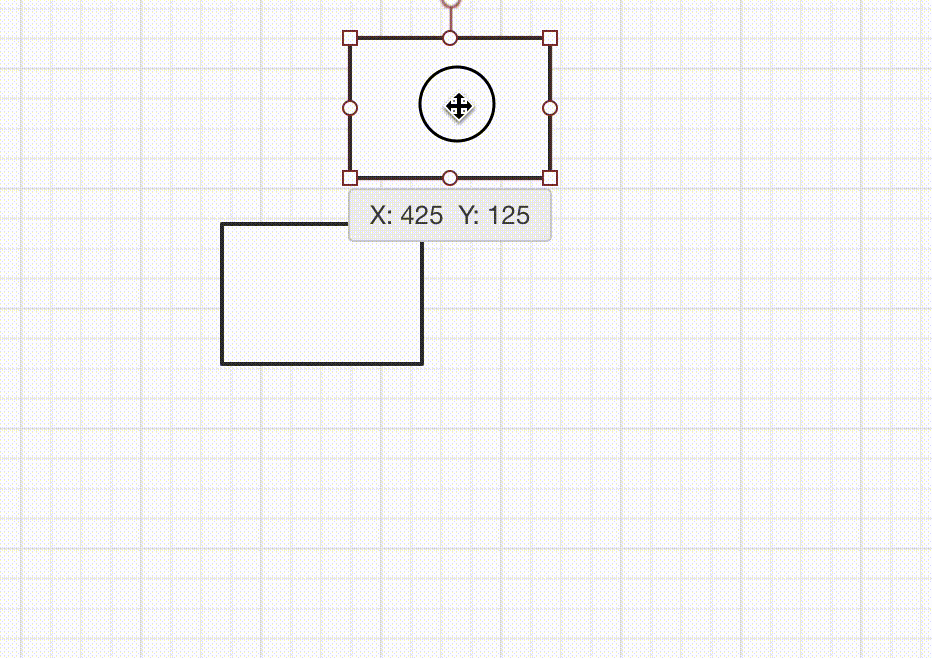
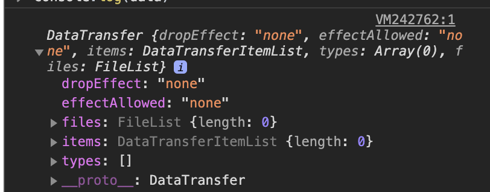
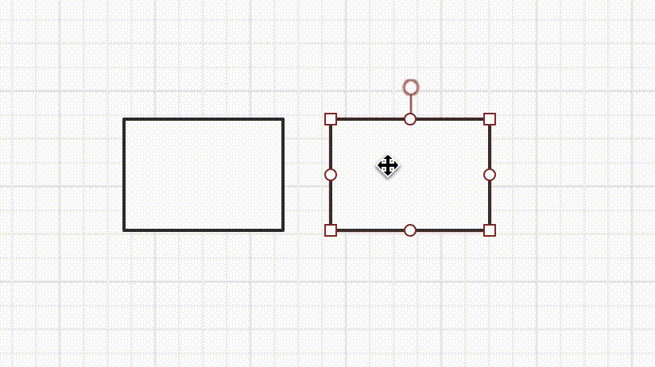

拖拽对齐参考线的实现
本文最后更新于：几秒前
拖拽对齐参考线实现
1. 简介
说到拖拽，我们并不陌生，比如我们平常用的拖拽排序；拖拽上传文件；拖拽对齐等…其中就有我今天要说到的拖拽对齐。那么拖拽对齐到底是怎么一回事？我们又该如何实现这个功能呢？
首先，我们先来看看拖拽对齐的效果的怎么样的，我们以一个在线画图工具ProcessOn来展示，如下图所示：

从上面的动图我们可以很容易地理解这个功能的效果。就是我们在拖拽一个元素的时候，当这个拖拽元素与另外的元素的边界在水平方向或者竖直方向的位置一样时，就在这个方向上画一条对齐线。所以按照着这个思路，我们来模仿着这个效果实现一个我们自己的拖拽对齐参考线的效果吧！
2. 实现步骤
如果将这个效果划分为多个步骤，简单来说那么我们可以分为如下的几个步骤：
- 拖拽一个DOM元素，让这个DOM元素跟随我们鼠标的位置来移动
- 记录我们要与拖拽元素对比的其他所有元素的边界的位置
- 用这些记录的边界位置和我们拖拽时，拖拽元素的实时的边界位置做对比，如果相等则在该方向上画一条参考线
- 放开鼠标，将拖拽DOM元素放到当前的位置
3. 如何随心所欲拖拽DOM？
无论你用vue还是react技术框架，在github或者npm上都能搜到很多优秀的与拖拽相关的包，比如vue框架下的 vue-dragable 或者 vue-draggable-resizable等。它们都有很好的拖拽效果，可以通过简单的配置就可以实现拖拽排序，拖拽更改尺寸等功能。但我今天要讲的是基于HTML5的原生的拖拽的一些技巧，以及在平时的拖拽应用场景下我们会遇到什么难题，还有就是我们如何解决这些难题？
首先我们来学习一下拖拽的基本知识，我们可以把拖拽的整个元素由两部分组成。一是拖拽的元素，二是落点的元素。而按拖拽的流程来看，拖拽其实分为了三个部分： 选中 —> 拖动 —> 释放 。
1. 选中：
在HTML5标准中，为了使元素可拖动，把draggable属性设置为true。文本、图片和链接是默认可以拖放的，它们的draggable属性自动被设置成了true。
Tip: 图片和链接按住鼠标左键选中，就可以拖放。文本只有在被选中的情况下才能拖放。如果显示设置文本的draggable属性为true，按住鼠标左键也可以直接拖放。
draggable属性：设置元素是否可拖动。
语法：
<element draggable="true | false | auto" >- true: 可以拖动
- false: 禁止拖动
- auto: 跟随浏览器定义是否可以拖动
2.拖动：
每一个可拖动的元素，在拖动过程中，都会经历三个过程，拖动开始–>拖动过程中–> 拖动结束。
| 对象 | 事件名称 | 说明 |
|---|---|---|
| 被拖动的元素 | dragstart | 在元素开始被拖动时候触发 |
| drag | 在元素被拖动时反复触发 | |
| dragend | 在拖动操作完成时触发 | |
| 目的地对象 | dragenter | 当被拖动元素进入目的地元素所占据的屏幕空间时触发 |
| dragover | 当被拖动元素在目的地元素内时触发 | |
| dragleave | 当被拖动元素没有放下就离开目的地元素时触发 |
注意： dragenter和dragover事件的默认行为是拒绝接受任何被拖放的元素。因此，我们必须阻止浏览器这种默认行为。e.preventDefault();
3. 释放：
到达目的地之后，释放元素事件
| 对象 | 事件名称 | 说明 |
|---|---|---|
| 目的地对象 | drop | 当被拖动元素在目的地元素里放下时触发，一般需要取消浏览器的默认行为。 |
以上就是整个拖拽过程相关的API了，那么可能有人要问了，如果在拖拽过程中我们需要存储一些数据进行拖拽过程中的交互，那这个如何呢？那就要用到DataTransfer对象登场了。
DataTransfer：
DataTransfer是与拖放操作所触发的事件同时派发的对象，它派生于MouseEvent，具有Event与MouseEvent对象的所有功能，并增加了dataTransfer属性。该属性用于保存拖放的数据和交互信息，返回DataTransfer对象。我们可以通过事件对象的event.dataTransfer来获取这个对象，这个对象包含的属性和方法如下图所示：

具体每一项属性或者方法的含义如下所示：
| 属性 | 说明 |
|---|---|
| types | 只读属性。它返回一个我们在dragstart事件中设置的拖动数据格式的数组。 格式顺序与拖动操作中包含的数据顺序相同。IE10+、Edge、safari3.1、Firefox3.5+ 和Chrome4以上支持该属性 |
| files | 返回拖动操作中的文件列表。包含一个在数据传输上所有可用的本地文件列表。如果拖动操作不涉及拖动文件，此属性是一个空列表。 |
| dropEffect | 获取当前选定的拖放操作的类型或将操作设置为新类型。它应该始终设置成effectAllowed的可能值之一【none、move、copy、link】。dragover事件处理程序中针对放置目标来设置dropEffect。 |
| effectAllowed | 指定拖放操作所允许的效果。必须是其中之一【 none, copy, copyLink, copyMove, link, linkMove, move, all, uninitialized】默认为uninitialized 表示允许所有的效果。ondragstart处理程序中设置effectAllowed属性 |
| 方法 | 说明 |
|---|---|
| void setData(format, data) | 将拖动操作的拖动数据设置为指定的数据和类型。format可以是MIME类型 |
| String getData(format) | 返回指定格式的数据，format与setData()中一致 |
| void clearData(format) | 删除给定类型的拖动操作的数据。如果给定类型的数据不存在，此方法不执行任何操作。如果不给定参数，则删除所有类型的数据。 |
| void setDragImage(img, xOffset, yOffset) | 指定一副图像，当拖动发生时，显示在光标下方。大多数情况下不用设置，因为被拖动的节点被创建成默认图片。x,y参数分别指示图像的水平、垂直偏移量 |
如果你使用Vue的话完全可以使用Vuex来存储整个拖拽过程你需要的数据，使用React的话也同样可以使用Redux来存储，这样搭配起使用的框架来说也更加优雅一些。搞懂了上面的基础知识，我们就可以愉快的实现拖拽DOM了，But….下面这些问题，你在开发过程中可能也会遇到，举些栗子：
关于拖拽你可能会遇到的难点：
1.如何自定义拖拽拖影？
什么叫拖拽拖影呢？其实很好理解，大家肯定也见过，如下图所示：
由上面的知识我们可以知道，图片默认都是可拖拽的，当图片被拖拽的时候，浏览器就会依据这个图片产生一个阴影，我们称之为“拖拽阴影”，是不是有一种灵魂出窍的感觉。但有时候我们不想要这种默认行为，我们想自定义自己的拖拽阴影，那么我们该如何去实现呢？
HTML5的拖拽API中为我们提供了这样一个方法叫做setDragImage，可以自定义拖拽过程中的拖影，它的具体用法如下所示：
语法：
void dataTransfer.setDragImage(img, xOffset, yOffset);参数：
img | Element
用于拖曳反馈图像的图像
Element元素。图像通常是一个<image>元素，但也可以是<canvas>或任何其他图像元素。xOffset
图片相对于鼠标指针出现的x方向的偏移量
yOffset
图片相对于鼠标指针出现的y方向的偏移量
使用：
const img = new Image();
img.src = dragIcon;
document.body.appendChild(img); // 必须把该元素添加到dom才能显示自定义拖拽阴影
evt.dataTransfer.setDragImage(img, -20, 120);注意： 如果插入的dom元素，比如
2. 如果拖拽的时候拖拽元素或者拖拽元素父元素不渲染了，如何保证拖拽正常执行？
有一种情况，当我们拖拽一个dom元素的时候，需要把拖拽面板隐藏，在Vue中我们通过对于这个面板通过v-if 或者 v-show 控制变量进行隐藏，我们拿阿里的imgcook来举个栗子：

从上面的动图中可以看到，当我们拖拽组件的时候，组件库面板隐藏了，漏出了组件树面板。如果按照我们上面的思路实现这个效果，拖拽的时候把父元素隐藏，那么这个拖拽的结果就是拖拽被打断。那么我们应该如何实现这一效果，又能不打断拖拽呢？
换另一个角度想，我们只是想拖拽的时候，让父元素还保持在DOM中渲染即可，即不会被移除DOM树或者不会被display:none；即可。那么我们这么做，制作一个空面板，然后我们把要拖拽的面板通过position: absolute;定位到这个空面板，当拖拽切换面板的时候，空面板隐藏，而我们的拖拽面板不隐藏而是瞬间移除视野之外，拖拽结束再让它回来。
// 拖拽的开始的时候
dragStart(){
this.$refs.dragContainer.style = {
opacity: 0,
left:-1000px
}
}
// 拖拽结束的时候
dragEnd(){
this.$refs.dragContainer.style = {
opacity: 1,
left:80px
}
} 这样以来我们就巧妙地避开了拖拽被打断的情况，但当你以为这个是个好办法的时候，你会发现这样拖拽还是被打断了，为什么呢？因为你在拖拽的时候改变了容器的位置！没错，改变位置同样会打断拖拽！那…到底该如何实现这种拖拽效果呢？ 换另一个角度想，我们是因为拖拽开始的时候改变了样式导致拖拽被打断，那么我们等拖起来再改变样式呢？没错！我们可以把设置样式放在计时器setTimeOut中，等拖拽起来之后我们我们再改变样式，这样一来就可以完美实现该效果了!
// 拖拽的开始的时候
dragStart(){
setTimeout(()=>{
this.$refs.dragContainer.style = {
opacity: 0,
left:-1000px
}
},0)
}4.如何记录DOM元素的位置边界？
记录我们要拖拽元素的位置和要做对齐比较的元素的位置，对于实现对齐参考线来说至关重要。Web中有一个方法getBoundingClientRect，这个方法返回元素的大小及其相对于视口的位置，也就是clientX和clientY的这个视口。
使用：
const position = dom.getBoundingClientRect();
const { left = 0, top = 0, right = 0, bottom = 0, width = 0, height = 0 } = position;
// left 元素相对于视口左边的距离
// top 元素相对于视口上边的距离
// right 元素相对于视口右边的距离
// bottom 元素相对于视口下边的距离
// width 元素的宽度
// height 元素的高度注意： 如果是标准盒子模型，元素的宽或高等于width/height + padding + border-width的总和。如果box-sizing: border-box，元素的的尺寸等于 width/height。
这个API可以很方便地让我们记录我们想要监听元素的位置，而我们想要对比监听的元素我们可以给每个元素添加一个ref或者id又或者data-xx 自定义属性等。具体记录监听的元素可以参考如下代码：
const nodes = this.root.querySelectorAll(this.selector);
if (nodes && nodes.length === 0) {
return;
}
nodes.forEach(node => {
node._leval = 0;
node._children = new Set([]);
node._id = node.getAttribute(this.idAttr);
});
for (let i = 0; i < nodes.length; i++) {
const position = nodes[i].getBoundingClientRect() || {};
const { width = 0, height = 0, top = 0, bottom = 0, left = 0, right = 0 } = position;
for (let j = i + 1; j < nodes.length; j++) {
if (nodes[i].contains(nodes[j])) {
nodes[j]._leval += 1; // 记录元素的层级
nodes[j]._parentId = nodes[i]._id; // 记录父节点
nodes[i]._children = nodes[i]._children.add(nodes[j]._id); // 记录元素的子节点们
}
}
this.listeners.push({
id: nodes[i]._id,
width,
height,
top,
bottom,
left: Math.round(left),
right: Math.round(right),
leval: nodes[i]._leval,
parentId: nodes[i]._parentId,
children: nodes[i]._children
});
} 从上可以看出，如果选择器通过querySelectorAll来查找，是无法区分查找结果的具体父子关系的，而父子元素对于我们的拖拽对齐很有用，比如我们再拖拽一个元素，这个元素又包含着一些子元素，我们拖拽这个元素的时候，我们肯定是不希望它与内部的子元素还做对比，我们画的参考线是针对于其外部的其他元素做对比。因此我们可以通过 dom1.contains(dom2)来判断和记录它们的父子关系。然后我们在页面监听元素更新的时候，再去重新收集依赖最新的位置信息即可。
5. 如何实现靠近吸附？
由于我们在拖拽的时候，并非是1像素1像素地去移动地，而两个元素的对齐又是在一瞬间的，只有在某一边的位置完全相等的时候，我们才鞥称之为对齐，所以就有了靠近吸附的功能，它能帮助我们更容易地实现辅助对齐的效果。具体效果参考ProcessOn如下图所示：

可以看到当拖拽元素接近对齐元素的时候，有一个吸附的效果，然后在吸附的地方画了一个参考线，那么我们应该如何实现这种功能呢？
我们同样可以将这个功能拆解一下，大概满足如下的步骤就能实现：
- 将方向分为x和y，且x和y方向的吸附是独立的
- 同一个方向上的同一时间最多只能有一个吸附效果
- 吸附效果应该出现在我们移动的方向上，比如向左移动的时候，吸附效果只能出现在x方向的左边的其他元素
- 当吸附发生后，应该有个鼠标安全距离，在这个安全距离内，鼠标的移动不会改变吸附效果，当大于这个距离的时候，才让拖拽元素跟着鼠标移动。不然会出现闪动或者“拔不出来”的情况。
6.如何画对齐参考线？
上面我们有了拖拽，也有了位置关系，那当拖拽元素与对比元素的位置一样的时候，如何画出一条对齐参考线呢？ 我们可以通过<canvas>元素来实现这一功能。
要实现canvas绘图，首先我们要创建canvas然后将canvas元素绝对定位放到拖拽对齐展示区域的上面，那么另一个难题来了，canvas元素也是dom，也就是说它也会干扰鼠标事件，其中就包含着我们的拖拽事件。如果我们的落点的event.target为canvas了，那肯定不是我们想要的结果。所以如何让canvas执行画图功能，但又要让它“透明”不干扰鼠标事件呢？其实css中有个属性，叫做pointer-events，它代表着元素如何处理鼠标事件。当我们如下设置的时候，它就不会不会捕捉一切的鼠标事件，相当于存在但“透明”！
pointer-event:none;canvas元素有了，然后我们再dragMove的时候可以实时地将拖拽元素和上面记录的对比监听者的边界做对比，如果相等就画一条线，下次执行dragMove的时候清除画布。伪代码如下：
// 生成canvas定位到展示区域上，并设置pointer-events:none;
const canvas = document.createElement("canvas");
const { width = 0, height = 0 } = this.rootPosition;
canvas.width = width;
canvas.height = height;
canvas.style=`position:absolute;pointer-events:none;left:0;top:0;`
this.root.appendChild(canvas);
// 相等时画线
const ctx = canvas.getContext("2d");
ctx.strokeStyle = this.defaultCanvasLineColor;
ctx.lineWidth = this.defaultCanvasLineWidth;
const { left = 0, width = 0, height = 0, top = 0 } = this.rootPosition;
ctx.beginPath();
ctx.moveTo(x - left, 0); // 注意：此时的移动的位置相对于根元素，也就是我们展示区域
ctx.lineTo(x - left, height);
ctx.stroke();
// 清除画布
const { width = 0, height = 0 } = this.rootPosition;
ctx.clearRect(0, 0, width, height);7. 如何将元素放到拖拽的位置？
知道了拖拽的时候位置，我们可以在dragEnd的时候将元素的样式的位置改为落点位置，这样就可以了，具体根据业务不同再细微调整。
注意： 如果落点有父子关系的话，落点位置要相对于父节点的位移，而非相对于视口！
8. 总结
拖拽对齐参考线是一项很常见功能，也是很耗费性能的操作，所以应保持在拖拽过程中尽可能地节省开销。 比如我们在监听dragMove的事件的时候，如果我们的鼠标位置在原地不动，它还是会一直执行，我们可以存储上一次的鼠标位置和这次的对比，如果完全一样就没必要执行里面的逻辑，这样可以节省不必要的开销。另一方面就是我们可以通过对dragMove函数进行节流处理，降低单位时间执行的次数，这样也能大大提高性能。总之，拖拽是门手艺，学会需要勇气，一起来试试吧！
本博客所有文章除特别声明外，均采用 CC BY-SA 4.0 协议 ，转载请注明出处！